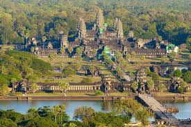

Angkor Wat

Angkor Wat is a temple complex in Cambodia and the largest religious monument in the world, on a site measuring 162.6 hectares (1,626,000 m2; 402 acres). It was originally constructed as a Hindu temple dedicated to the god Vishnu for the Khmer Empire, gradually transforming into a Buddhist temple towards the end of the 12th century. It was built by the Khmer King Suryavarman II in the early 12th century in Yaśodharapura, the capital of the Khmer Empire, as his state temple and eventual mausoleum. Breaking from the Shaiva tradition of previous kings, Angkor Wat was instead dedicated to Vishnu. As the best-preserved temple at the site, it is the only one to have remained a significant religious centre since its foundation. The temple is at the top of the high classical style of Khmer architecture. It has become a symbol of Cambodia, appearing on its national flag, and it is the country\'s prime attraction for visitors
Angkor Thom

The south gate of Angkor Thom is most popular with visitors, as it has been fully restored and many of the heads (mostly copies) remain in place. The gate is on the main road into Angkor Thom from Angkor Wat, and it gets very busy at peak times
Banteay Srei
Banteay Srei or Banteay Srey (Khmer: ប្រាសាទបន្ទាយស្រី) is a 10th-century Cambodian temple dedicated to the Hindu god Shiva. Located in the area of Angkor, it lies near the hill of Phnom Dei, 25 km (16 mi) north-east of the main group of temples that once belonged to the medieval capitals of Yasodharapura and Angkor Thom. Banteay Srei is built largely of red sandstone,a medium that lends itself to the elaborate decorative wall carvings which are still observable today. The buildings themselves are miniature in scale,unusually so when measured by the standards of Angkorian construction. The sefactors have made the temple extremely popular with tourists, and have led to its being widely praised as a "precious gem", or the "jewel of Khmer art."
Angkor Wat Temple
Angkor Wat is a temple complex in Cambodia...
Angkor Wat combines two basic plans...

Angkor Thom Temple
The city of Angkor Thom consists of a square...
The south gate of Angkor Thom is most popular...

Angkor Wat Temple
Angkor Wat is a temple complex in Cambodia...
Angkor Wat combines two basic plans...
Banteay Srei Temple
Banteay Srei is a 10th-century Cambodian temple...
Consecrated on 22 April 967 A.D...